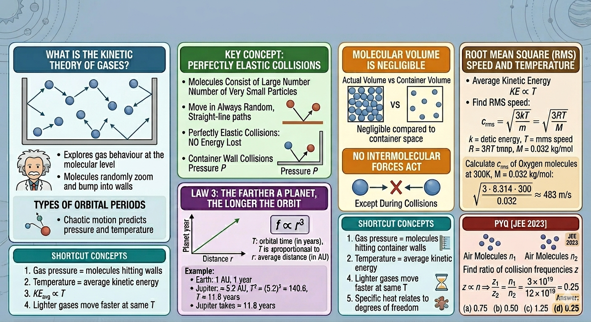

Kinetic Theory of Gases and Its Applications

Image generated by Google AI
What Is the Kinetic Theory of Gases?
Imagine standing in a crowded train station, surrounded by people rushing in all directions. Everyone bumps into each other and the walls, yet somehow, patterns emerge, trains arrive on time, and the crowd as a whole moves efficiently. Now shrink that scene down a billion times, and you get the world of gas molecules. Each molecule zips around randomly, colliding with others and bouncing off the container walls, creating an invisible, microscopic dance. The Kinetic Theory of Gases helps us understand this dance, showing how chaotic motion produces predictable outcomes like pressure and temperature.
Think of this theory as a translator: it converts the tiny, rapid movements of individual molecules into measurable macroscopic quantities such as pressure, volume, and temperature that we can observe and experiment with in our labs.
Here are the main assumptions this theory makes:
- Gases consist of a large number of extremely small molecules.
- These molecules are always moving in random, straight-line paths until they collide.
- All collisions, whether between molecules or with container walls, are perfectly elastic, meaning kinetic energy is conserved during collisions.
- The actual volume of gas molecules is negligible compared to the volume the gas occupies.
- Except during collisions, no attractive or repulsive forces act between molecules.
Of course, these assumptions are idealizations. Real gases deviate from them under high pressure or low temperature, where molecular volume and intermolecular forces become significant. Nevertheless, under everyday conditions, room temperature and atmospheric pressure, this model gives remarkably accurate predictions.
A subtle but fascinating fact: although molecules collide randomly, the average kinetic energy is directly proportional to temperature, which explains why heat is a measure of molecular motion. Even at absolute zero, molecules theoretically have minimal motion, highlighting the deep connection between temperature and energy.
Key Concepts and Definitions
-
Pressure of a Gas:
Pressure arises because molecules constantly collide with the walls of their container, transferring momentum. Microscopically, pressure \(P\) is given by:\[ P = \frac{1}{3} \rho \bar{c}^2 \]where \( \rho \) is the mass density of the gas and \( \bar{c} \) is the root mean square speed of the molecules. The factor \( \frac{1}{3} \) appears because the motion is equally distributed in three dimensions. -
Root Mean Square Speed (rms speed):
The rms speed represents the quadratic average of molecular speeds:\[ c_{\text{rms}} = \sqrt{\frac{3kT}{m}} = \sqrt{\frac{3RT}{M}} \]Here \( k \) is Boltzmann’s constant, \( T \) is temperature in Kelvin, \( R \) is the universal gas constant, and \( M \) is molar mass. The square root of 3 factor arises from three translational degrees of freedom in space. -
Molecular Speed Distribution:
Not all molecules travel at the same speed. Speeds follow the Maxwell–Boltzmann distribution, which peaks at a most probable speed \( c_\text{mp} \) but allows some molecules to move much faster or slower. This explains phenomena like effusion and diffusion rates. -
Collision Frequency \( (z) \):
The average number of collisions a molecule experiences per unit time is proportional to the number density \( n \) and the average molecular speed \( \bar{c} \):\[ z \propto n \bar{c} \]Collision frequency determines transport properties like viscosity, thermal conductivity, and diffusion. -
Mean Free Path \( (\lambda) \):
The mean free path is the average distance a molecule travels between collisions:\[ \lambda = \frac{1}{\sqrt{2} \pi d^2 n} \]where \( d \) is the effective molecular diameter. Notice that \(\lambda\) decreases as density increases, so gases under compression have shorter free paths. -
Kinetic Energy of One Molecule:
The average translational kinetic energy is directly proportional to temperature:\[ KE = \frac{3}{2}kT \] -
Kinetic Energy of One Mole of Gas:
\[ KE = \frac{3}{2}RT \]This follows from \( KE_\text{mol} = N_A \cdot KE_\text{molecule} \), where \( N_A \) is Avogadro’s number.
-
Ideal Gas Equation:
\[ PV = nRT \]
-
Degrees of Freedom:
Degrees of freedom are independent ways a molecule can store energy: translational (3), rotational (2 or 3), and vibrational (2 per vibrational mode). The equipartition theorem states that each quadratic degree of freedom contributes \( \frac{1}{2}kT \) per molecule to energy.
Shortcut Concepts
- Gas pressure = molecules hitting container walls.
- Temperature = average kinetic energy of molecules.
- \( KE_{\text{avg}} \propto T \)
- Lighter gases move faster at the same temperature, which explains why hydrogen effuses faster than oxygen (Graham’s law).
- Specific heat relates to degrees of freedom: more degrees of freedom → higher energy storage → higher specific heat.
Examples
-
Calculate rms speed
Find rms speed of oxygen molecules at \( 300\,\text{K} \). Molar mass \( M = 32\,\text{g/mol} \).
Convert molar mass:
\( M = 0.032\,\text{kg/mol} \)
\[ c_{\text{rms}} = \sqrt{\frac{3RT}{M}} = \sqrt{\frac{3 \cdot 8.314 \cdot 300}{0.032}} \approx 483\,\text{m/s} \]Notice how molecules move almost 500 m/s! That’s why we don’t feel them individually, their sheer numbers average out their impacts.
-
Find pressure from rms speed
A gas with density \( \rho = 1.5\,\text{kg/m}^3 \) has \( c_{\text{rms}} = 500\,\text{m/s} \).
\[ P = \frac{1}{3} \rho c_{\text{rms}}^2 = \frac{1}{3} \cdot 1.5 \cdot (500)^2 = 125000\,\text{Pa} \]This demonstrates the direct connection between molecular motion and observable pressure.
-
Average Kinetic Energy
\[ KE = \frac{3}{2}kT = \frac{3}{2} \cdot 1.38 \times 10^{-23} \cdot 300 \approx 6.21 \times 10^{-21}\,\text{J} \]
Even such tiny energy per molecule sums to substantial energy for a mole of gas, highlighting the macroscopic impact of microscopic motion.
Concept Questions with Explanations
-
What causes gas pressure?
Billions of molecules collide with container walls every second, transferring momentum and generating pressure. -
Why is temperature linked to molecular energy?
Temperature is a measure of average kinetic energy per molecule. Heating a gas speeds up molecules; cooling slows them. -
Do all molecules move at the same speed?
No. Molecular speeds follow the Maxwell–Boltzmann distribution. Some are faster than the rms speed, some slower. -
What is mean free path?
It is the average distance a molecule travels before colliding with another. Denser gases or larger molecules have shorter mean free paths. -
What happens when gas is compressed?
Compression decreases volume, increases collision frequency, and thus pressure. Temperature may rise if compression is adiabatic.
Super Tips for Solving Fast
-
For rms speed
\[ c_{\text{rms}} = \sqrt{\frac{3RT}{M}} \]
-
Pressure relation
\[ P = \frac{1}{3}\rho \bar{c}^2 \]
-
Average kinetic energy
\[ KE_{\text{avg}} = \frac{3}{2}kT \]
-
Constants
\[ R = 8.314\,\text{J/mol·K} \quad k = 1.38 \times 10^{-23}\,\text{J/K} \]
-
Gas law relations
\[ PV = nRT \quad \frac{P_1V_1}{T_1} = \frac{P_2V_2}{T_2} \]
Previous Year Questions (PYQs)
Q1.
The number of air molecules per cm3 increased from \(3 \times 10^{19}\) to \(12 \times 10^{19}\).
Find ratio of collision frequencies.
[JEE 2023]
- 0.75
- 0.50
- 1.25
- 0.25
Solution:
Collision frequency \( z \propto n \)
Answer: \( \boxed{0.25} \)